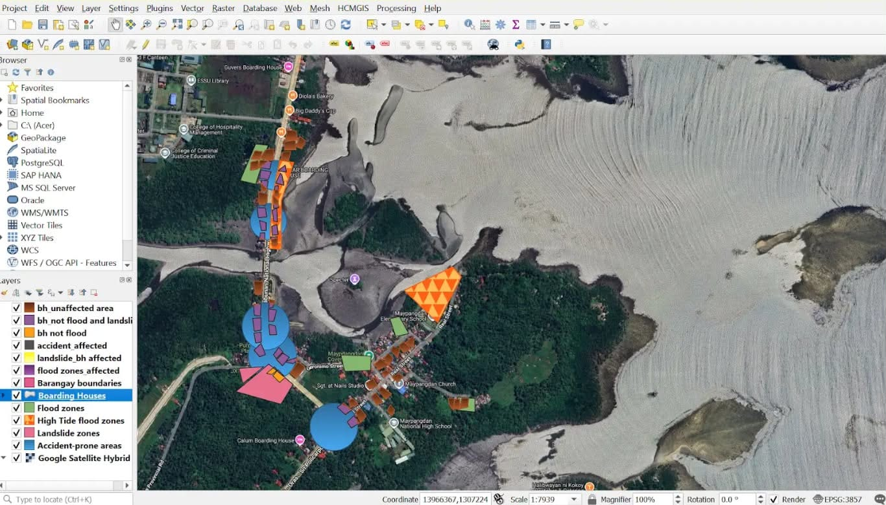

My Projects

QGIS-MAPPING
This picture,we created a digital map using QGIS to show different locations and geographic features. I worked with different map layers, added and edited features, and organized the information to make the map clear and easy to understand. This project helped me learn the basics of digital mapping and working with geographic data.

TASK MANAGER
This picture,we created a simple Task Manager that helps users organize and keep track of their daily tasks. Users can add, view, and mark tasks as completed. This project helped me improve my coding skills and understand how to create a simple and useful web application.
LET'S CONNECT
Contact Me
I'd love to connect with you!
📧andiachristine840@gmail.com
📱09066110487